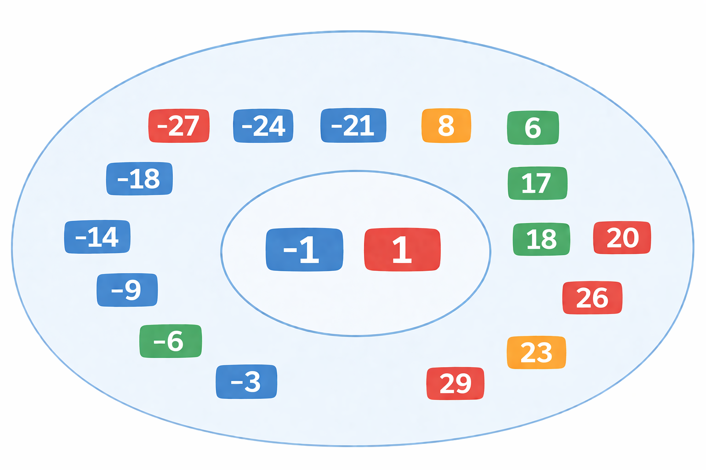
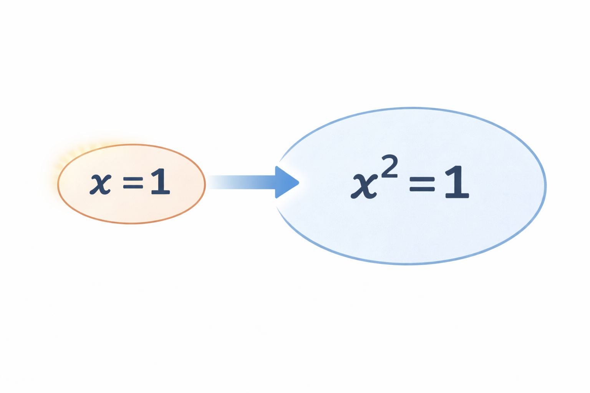

まずは定義
十分条件
\(p \to q\) が真
このとき、\(p\) は \(q\) であるための十分条件です。
つまり、\(p\) が成り立てば \(q\) まで言える、という意味です。
必要条件
\(p \to q\) が真
このとき、\(q\) は \(p\) であるための必要条件です。
つまり、\(p\) が成り立つためには、\(q\) が成り立っている必要があります。
必要条件のイメージ（絞る条件）
例えば、\(-30\) から \(30\) までのたくさんの整数があるとします。
その中から、\(1\) だけを見つけたいとします。
その中のある数を \(x\) とおくと、いきなり「\(x=1\)」と言うのは難しいですが、 「\(x^2=1\)」と分かれば、\(x=1\) または \(x=-1\) に絞ることができます。
まだ \(x=1\) とは言えませんが、何も分からない状態よりはかなり近づいています。
したがって、\(x=1\) であるためには \(x^2=1\) が必要であり、 \(x^2=1\) は \(x=1\) の必要条件です。
このように、あることが成り立つときに必ず一緒に成り立っている条件を必要条件といいます。

十分条件のイメージ（一発で決まる条件）
例えば、\(-30\) から \(30\) までのたくさんの整数があるとします。
その中のある数を \(x\) とおくと、 「\(x=1\)」と分かれば、 「\(x^2=1\)」は必ず成り立ちます。
つまり、\(x^2=1\) となるような \(x\) を探しているとき、 \(x=1\) と分かれば、それだけで 十分 です。
したがって、\(x=1\) は \(x^2=1\) であるための十分条件です。
このように、ある条件が成り立てば、それだけで目的が言えるとき、その条件を十分条件といいます。

見方の整理
命題 \(p \to q\) が真なら
\(p\) は \(q\) であるための十分条件
\(q\) は \(p\) であるための必要条件
命題 \(q \to p\) が真なら
\(q\) は \(p\) であるための十分条件
\(p\) は \(q\) であるための必要条件
問題の答え方のコツ
問題で
と聞かれたら、まず \(p \to q\) を作ります。
| 調べる命題 | 成り立ったら何と言えるか | 問題文にそのまま使えるか |
|---|---|---|
| \(p \to q\) |
\(p\) は \(q\) であるための十分条件 同時に、\(q\) は \(p\) であるための必要条件 |
十分はそのまま使えます。 必要の方は主語が \(q\) になっていて、問題文の並びと逆なので、そのままでは答えになりません。 |
| \(q \to p\) |
\(p\) は \(q\) であるための必要条件 同時に、\(q\) は \(p\) であるための十分条件 |
必要を答えたいときは、こちらを調べる必要があります。 |
「\(p\) は \(q\) であるための 条件か？」と聞かれているとき、
\(p \to q\) から分かるのは \(p\) が十分かどうかです。
\(p\) が必要かどうかを知るには、\(q \to p\) も調べる必要があります。
解き方の手順
↓
まず \(p \to q\) を作る
\(p \to q\) が真なら 十分
\(q \to p\) が真なら 必要
例
例：\(x = 1\) は \(x^2 = 1\) であるための何条件か
\(x = 1 \to x^2 = 1\)
これは真です。
したがって、\(x = 1\) は \(x^2 = 1\) であるための十分条件です。
\(x^2 = 1 \to x = 1\)
これは偽です。\(x = -1\) のときも \(x^2 = 1\) だからです。
したがって、必要条件ではありません。
以上より、\(x = 1\) は \(x^2 = 1\) であるための十分条件であるが、 必要条件ではないことが分かります。